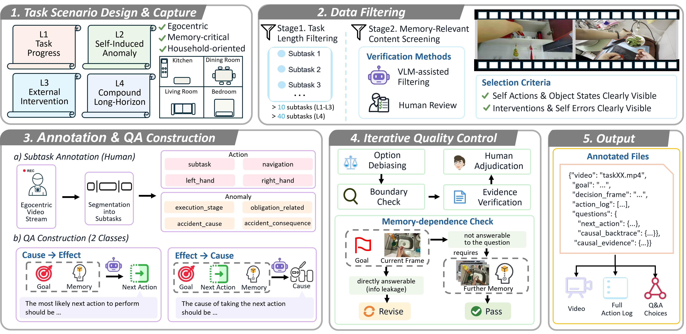

L1
Task Progress Memory
Track completed steps and prerequisites, even when task progress is no longer visible.
EMBER-Bench
Which past event matters for the next action? EMBER-Bench tests whether models turn the continuing consequences of history into decisions.
Past events keep changing the world after they leave view. A completed prerequisite, an unresolved mistake, or a moved object can constrain what should happen next.
EMBER-Bench asks models to connect those events to the present: predict the next action, then trace that action back to its historical cause. The challenge is cross-event causal reasoning, beyond historical retrieval.
Explore the evaluationWhile the performer is elsewhere, another person places the mug inside a cupboard.
The task is to prepare tea. The current view alone does not reveal where the mug went.
Its changed location determines the next useful action: open the cupboard.
Select the appropriate next action from four candidates. The earlier relocation makes retrieving the mug from the cupboard necessary.
Select the video interval containing the relevant historical event from four labeled intervals. Here, it is the mug’s relocation.
ILLUSTRATIVE SCHEMATIC · This hypothetical example explains the task; it is not a released dataset item.

Newly designed and recorded egocentric household tasks, with fine-grained action and causal-chain annotations.
Track completed steps and prerequisites, even when task progress is no longer visible.
Remember the lasting consequences of your own mistakes and the recovery required.
Update object location, identity, or availability after another person changes the scene.
Maintain multiple historical constraints across intervening activities, anomalies, and interventions.

P Next-action prediction · 548 questionsGiven a task goal, pre-decision video history, and current frame, select the next action from four candidates across L1–L4.
C Causal traceback · 151 questionsGiven the reference next action, select the relevant historical interval from four video-labeled candidates. Eligible L2–L4 questions are paired with prediction questions.
Fixed decision points in recorded human activities · Four-option multiple choice · Accuracy (%) · Offline reasoning evaluation
Manuscript Table 2 · Accuracy across 699 questions. The 16-model average is the unweighted mean of their reported Overall accuracies. Human performance is a separate reference and is excluded from model ranking and the model average.
At matched decision points, correct traceback is not associated with correct next-action prediction in the reported analysis.
Across six models, action logs add +1.6 points on average. Privileged cause-and-consequence annotations add a further +13.0 points on top of the logs.
The annotations diagnose information needs; they provide privileged causal information.
12 of 16 models obtain their lowest next-action accuracy in L4, where multiple distant dependencies must be maintained together.

189 newly recorded household tasks spanning scenes and activities, with diverse history lengths and causal dependencies.

The research team designed and recorded the tasks and annotated actions and causal relationships. Model-assisted QA verification and iterative human review check evidence, answer uniqueness, option bias, and input boundaries.
L1: 205 · L2: 171 · L3: 188 · L4: 135. These are question counts, not task counts. The benchmark pairs 151 eligible prediction questions with causal traceback questions.
Explore the benchmark design and evaluation toolkit. The public dataset release is pending.
Four memory scenarios, paired reasoning directions, original task illustrations, and diagnostic analysis.
See the benchmark designEvaluation code, input preparation, inference adapters, scoring, and reproducibility instructions.
Explore the evaluation guideFull videos, questions, and annotations will be announced in the repository with access instructions.
Public dataset release pending